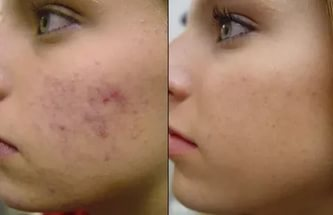

ZVEZDICE
Bubuljice i akne su najgori neprijatelji kože gotovo svake druge devojke. Ovi dosadni problemi mogu se pojaviti tako iznenada da samo želite da sednete i plačete! Danas ćemo vam reći kako da se zaštitite od takvih „iznenađenja“, kao i kako da ih se oslobodite ZAUVEK. Pažljivo pročitate!
Zapitajte se: jeste li ikada sanjali da vam se ni jedna bubuljica ponovo ne pojaviti na licu? Ne morate više žuriti da je prekrivate puderom, nervozno se pitajući za koliko će dana nestati, a takođe zamišljate kakvu će pažnju privući ovo mala dosada. Zamislite da vas više ne brinu bubuljice ili akne. Da, zvuči kao fantazija. Ali, ipak, to je sasvim moguće.
Pre samo tri meseca, na međunarodnoj izložbi kozmetologije u Izraelu, predstavljena je nova krema protiv akni Crystaline. Dizajnirana je za brzo rešavanje gorućih problema kože lica, naime da se devojke spasu od bubuljica i akni. Sada i zauvek.
Jedinstveni sastav kreme ne samo da pomaže u uklanjanju upala i uništavanju bakterija, već otvara začepljene pore, uklanjajući rožnate čepove, a takođe značajno smanjuje masnoću kožu. Kao rezultat toga, Crystaline u potpunosti kontroliše rad lojnih žlezda i eliminiše efekte bubuljica i akni. Ono što je najvažnije, svakodnevnom upotrebom tečne olovke, rešićete ih se za tri nedelje.
Naravno, nakon tako velike izjava, naknadne prodaje Crystaline-a postale su rekordno brze i ostavila je za sobom apsolutno sve konkurentne proizvode. Primena tečne olovke počela je pre skoro dva meseca; Crystaline se pojavio na kozmetičkim tržištima u 20 zemalja sveta, uključujući Rusiju. Za to vreme, desetine hiljada devojaka testirale su lek na sebi ... I bili smo veoma zadovoljni rezultatom! Među njima su, uzgred, bili i predstavnici ruskog šoubiznisa. Neki - na primer, Olga Buzova, Nastasia Samburskaia, Vera Brežneva i Ksenia Borodina - čak su pristale da podele svoje komentare.
Novootkrivena pevačica Olga Buzova bila je jedna od prvih koja je nabavila Crystaline - vruća kalifornijska klima i naporna snimanja odmah su joj se odrazili na ljupkom licu. "Treći dan sam videla efekat kreme - manje nevolje sa kožom brzo su prolazile, a trebalo mi je sve manje šminke da bih se osećala normalno na setu", kaže zvezda.
Nastasia Samburskaia
Nastasii Samburskai se takođe svidela nova krema protiv akni. Evo šta zvezda sama kaže o tome: "Kada iscrpite telo teškim fizičkim naporom, to neizmerno utiče na kožu, a pre svega na kožu lica. U teretani želite da izgledate dobro, ali kako to učiniti ako se bubuljice i dalje vide? Crystaline mi je pomogao da zaboravim na ovaj problem u potpunosti, i veoma sam mu zahvalna."
Vera Brežneva
Druga lepotica koja ceni Crystaline je Vera Brežneva. Prema glasinama, ona je čak i lično pozvana na prezentaciju. Kako sama zvezda kaže, nova krema protiv akni zaista može bankrotirati proizvođače konkurentnih proizvoda!
Ksenia Borodina
Lepotica Ksenia ne bi propustila priliku da testira novinu iz nege lepote na sebi, posebno kada je reč o koži lica. "Još se sećam svojih prvih utisaka o Crystaline-u: nakon samo nekoliko nedelja moja koža je bila čista kao bebina. Niti jedne bubuljice! Štaviše, prošlo je više od mesec dana, a efekat se još uvek drži. Oduševljena sam! " - kaže zvezda.
Svako može kupiti Crystaline u bilo koje doba dana - za to je potrebno samo da odete na zvaničnu veb stranicu predstavničke kompanije i ostavite porudžbinu. Želimo vam da se jednom i zauvek rešite nevolja na licu! Zapamtite - sa Crystaline-om to je moguće!

SVE ŠTO NE MOŽETE PROPUSTITI
ZANIMLJIVO ONLINE


Комментарии
Ženečka Verbitskaia (Beograd) Verovatno puno košta...
ODGOVORITI • 24
24
Katiuška (Novi Sad)
Zašto ostavljate takve komentare, a da se ne potrudite se da odete na sajt i pogledate cenu?) Cena je sasvim odgovarajuća za kozmetiku, rekla bih da je za takav proizvod to čak i jeftino. Očigledno zato što prodaja ide direktno sa stranice, a ne preko posrednika.
ODGOVORITI • 67
67
Inka (Kragujevac)
Da, Crystaline je vrhunska krema protiv akni. Koristila sam ga dve nedelje, a potom prestala kada su nestale sve akne. Od tada je prošlo više od mesec dana, ali one se još uvek ne pojavljuju. Zaista nisam verovala, ali dođavola, uspeva !!!
ODGOVORITI • 3
3
Marija (Gornji Milanovac)
Čula sam za ovu kremu već stotinu puta i još uvek nisam mogala da skupim hrabrost i kupim je. Pa, sada ću je definitivno naručiti! Hvala Cosmo!
ODGOVORITI • 23
23
Vasilisa (Beograd)
Crystaline je jedini lek koji mi je pomogao da se borim protiv dejstva akni. Šteta što je toliko novca izgubljeno ... Ali onda sam konačno pronašla ono što mi je trebalo!

ODGOVORITI • 11
11
Olesia (Sombor) Vau, kakve cool rezultate imate! Hitno poručujem!
ODGOVORITI • 41
41
Valentina (Stara Pazova) Devojke, koliko je treba da se stigne? Hoće li stići za nedelju dana?
ODGOVORITI • 24
24
Elena (Užice) Ako naručite na zvaničnom veb sajtu , sigurno će doći na vreme. Stigla mi jeo datle za pet dana, a isto tako i mojoj prijateljici. Eto, usput, popust važi danas, kupite na vreme!
ODGOVORITI • 56
56